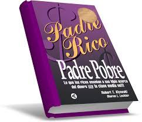
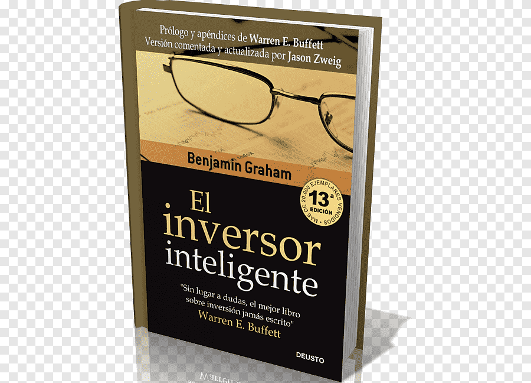
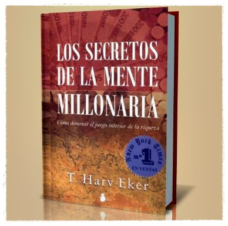
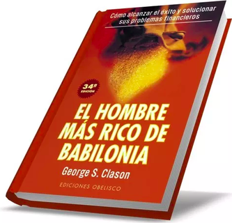

1-Padre Rico y Padre Pobre es un libro escrito por Robert Kiyosaki y Sharon Lechter. Evoca el concepto de libertad financiera a través de la inversión, los inmuebles, ser dueño de negocios y el uso de tácticas de protección financiera Padre Rico Padre Pobre está escrito de una forma anecdótica y está orientado a crear un interés público en las finanzas. Kiyosaki y Lechter aconsejan que ser dueño de un sistema o forma de producción, es mejor que ser un empleado asalariado. Este es un tema recurrente en los capítulos del libro.
«No se puede» convierte a la gente fuerte en débil, ciega a personas que pueden ver, entristece a la gente feliz, convierte a los valientes en cobardes, le quita a un genio su sagacidad, causa que la gente rica piense pobremente, y limita los logros de esa gran persona que vive dentro de todos nosotros. Kiyosaki

“La escritura es la pintura de la voz».
Voltaire
2-Los secretos de la mente millonariaEl libro trata de los patrones de conducta que todos tenemos en el subconsciente en relación con el dinero. Según el autor, estos patrones de conducta se aprenden en la infancia y pueden hacer que tengamos una mala relación con el dinero.
El objetivo del libro es, por lo tanto, darnos a conocer los patrones de pensamiento de los ricos y hacer que desarrollemos una mentalidad millonaria.
Si tenemos creencias limitantes con respecto al dinero, nunca conseguiremos ser millonarios. Por eso, tenemos que cambiar nuestros pensamientos y patrones en relación con el dinero, sino nunca lograremos el éxito y la riqueza que queremos.T. Harv Eker

“Adquirir el hábito de la lectura y rodearnos de buenos libros es construirnos un refugio moral que nos protege de casi todas las miserias de la vida”.
W. Somerset Maugham
3-El inversor inteligente Benjamin Graham. Es un clásico de la literatura financiera y muchas personas lo consideran la Biblia de las inversiones en bolsa. De hecho, hasta el gran Warren Buffett estima que es el mejor libro sobre inversiones jamás escrito. Sin duda alguna es un libro de lectura obligada para cualquier persona que desee comenzar a invertir en bolsa con unos sólidos cimientos, pues se puede aprender verdaderamente mucho de este excelente libro
"Si has construído castillos en el aire, tu trabajo no tiene por qué perderse, está donde tiene que estar. Lo que tienes que hacer ahora es poner los cimientos debajo del castillo."

“La lectura hace al hombre completo; la conversación lo hace ágil, el escribir lo hace preciso".
Francis Bacon
4-El hombre más rico de Babilonia es una fábula que ilustra los motivos del éxito de la antigua Babilonia, una de las ciudades más ricas del mundo en aquel entonces. Era una versión simplificada de la economía actual pues por aquel entonces ya se utilizaba el dinero para los intercambios e incluso existían los préstamos.
El libro narra las aventuras de varios personajes, entre ellos Arkad, un muchacho que trabaja muy duramente a la vez que aplica los principios de la riqueza, lo cual le permite llegar a ser el hombre más rico de Babilonia y así comprar su libertad.
Cuando un joven se dirige a un viejo para recibir un consejo, bebe de la fuente de la sabiduría que da la experiencia.
